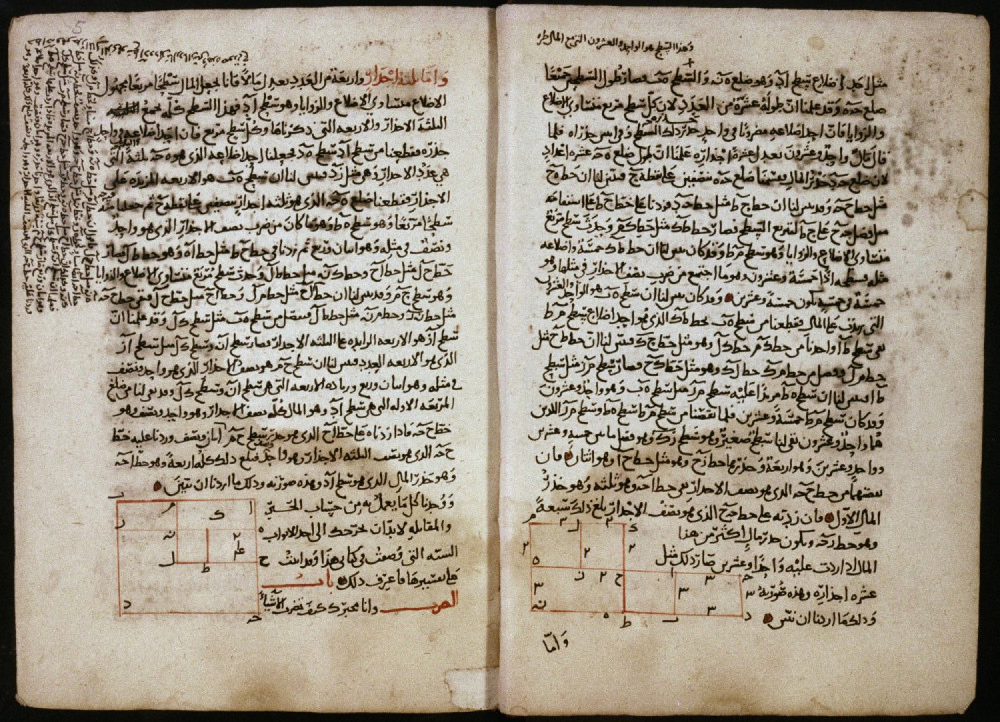
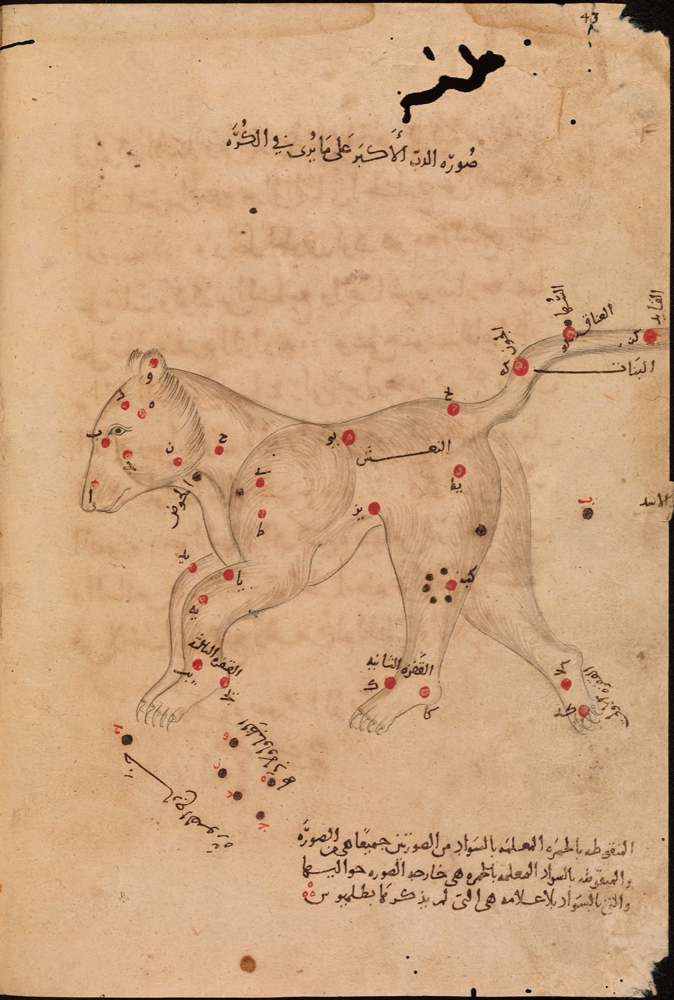
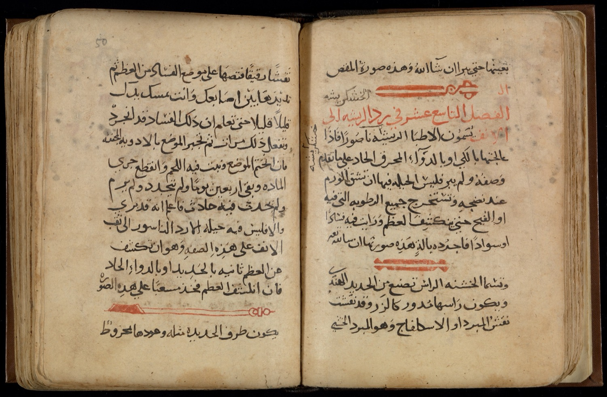
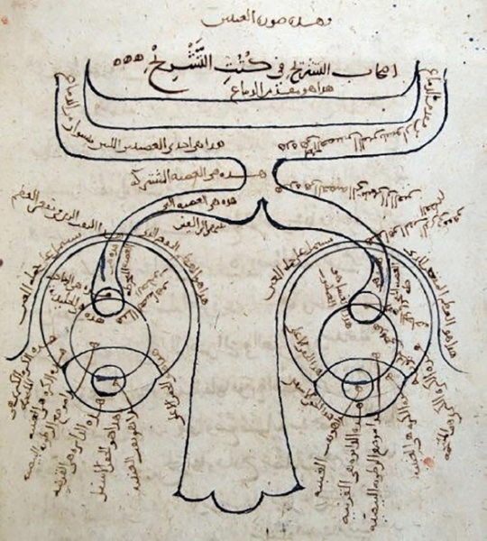
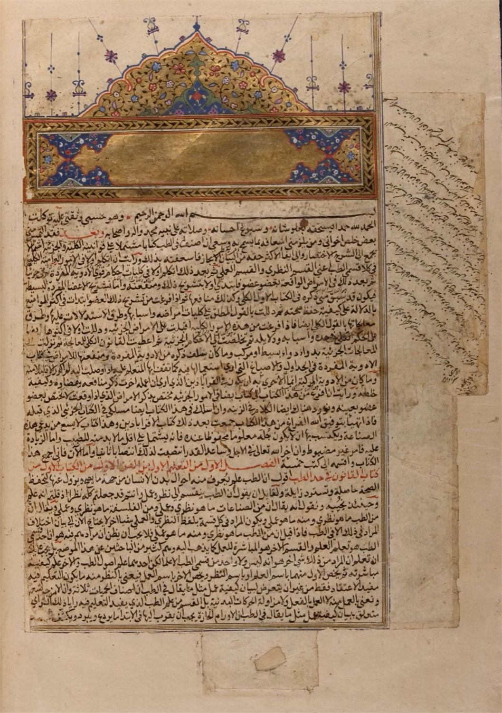
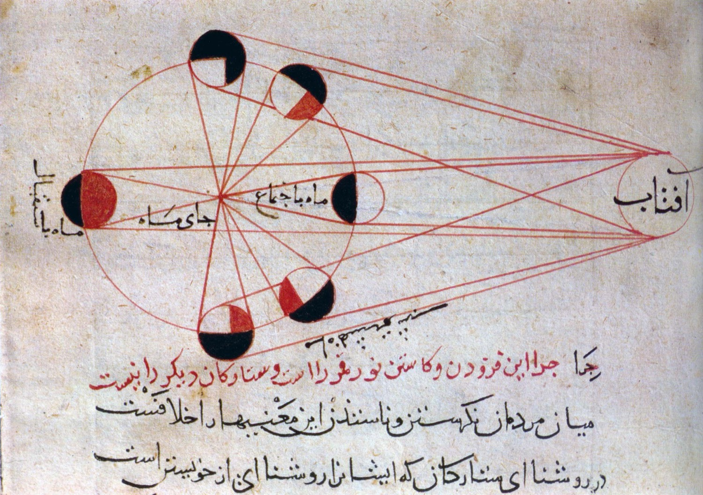
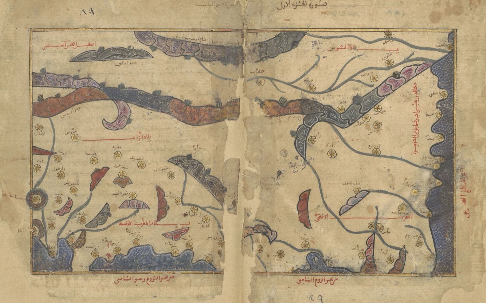
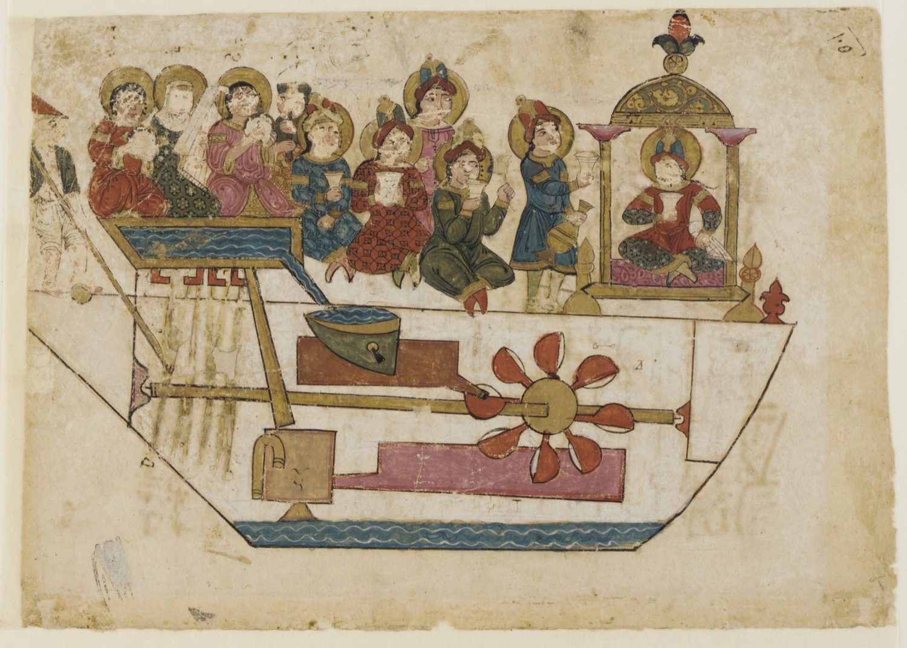
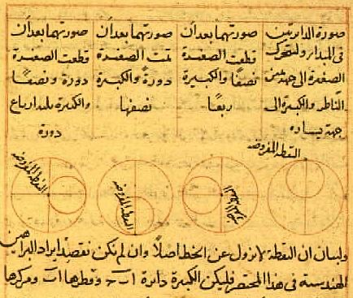

Research infrastructure
for the Quran
Start from an ayah, branch it with other students, and take it through a scholar and a scientist to a published research paper.
Let’s publish again.
Every time science finds something, the feed says the Quran said it 1400 years ago. If it did, why didn’t we find it first? AASAAR is where that work starts.
Hold my placeTag an ayah
Pick a verse and leave a question under it. Every word opens its root, its range and its uses across the Quran.
- Open to everyoneThe first note needs no permission and no review. Nothing is gated.
- Any formatA sentence, a voice memo, or a page you are stuck on.
- Four lensesAafaaq and Anfus, Kitab, Tazkiya and Hikmah, from the tasks in 62:2.
If the widening is a standing property of the sky and not an event, does it have a preferred direction?
Branch the reading
Other students fork your note from physics, Arabic, medicine or tafsir, and the strongest reading rises.
- Support or refuteA heart is not evidence. There are no likes here.
- No sect labelsA note carries one label: the verse it came from.
- Your own fieldCarry any reading into the discipline you can actually work in.
Science finds it.
We post a comment.
Change thatThe apologyWaiting for a journal, then claiming the verse had it first.
The premiseA verse is where the question starts, not where the headline ends.
The research paperYou go and find the thing, and you say what would prove you wrong.
Review by two people
A scholar of classical Arabic checks the root and the context. A researcher checks the method and the maths. Both sign, or it doesn’t move.
- Scholar checkEvery reading is held to the classical lexicons. Scope may widen. Roots do not move.
- Field checkThe method, the data and the maths, by someone who works there.
- A mentorAssigned once a note has been forked enough to become a draft.
“Name the observation that would sink this. Until it can fail, it is not a model.”
Example reviewPublish a research paper
What leaves the bench is a research paper, not a post. If a sentence isn’t yours, it doesn’t go out.
The mūsi‘ūn condition: a boundary on metric growth
- Baseline
- Quran 51:47, root و س ع
- Method
- Perturbed FLRW lattice, 10⁴ runs
- Falsifier
- Isotropy above 10⁻⁵ at z < 2
- Link
- Permanent, with your name on it
- A methodHow you did it, so someone else can check.
- A falsifierThe observation that would prove you wrong.
- A permanent linkYour name on the work, for anyone to build on.









We used to write
the research papers
Algebra, optics, surgery, astronomy, maps. Nobody on these pages was waiting for a headline.
Pick up the workSix things this bench refuses
No miracle huntingThe verse comes first, or it is not here.
No numerologyA number needs a method, not a coincidence.
No sect labelsNo Barelvi, Deobandi, Salafi, Shia or Sunni tags.
No twisting the ArabicChecked against the classical lexicons, every time.
No ritual fiqhThis is not a fatwa desk.
No likesYou support, you refute, or you branch.
Questions
Is this another tafsir app?
No. Tafsir is a library you read backwards. AASAAR is a workbench you write forwards, and the output is a hypothesis with your name on it.
Is this “Quran and science” miracles?
No, and that is the whole point. Here the verse comes first and the research paper follows.
Do I need to know Arabic?
Not to start. Every word opens its root, its range and its uses, in English and Urdu.
I am fourteen. Can I post?
Yes. The first note needs no permission and no review.
Does the app write the research paper for me?
No. It asks the questions a supervisor would ask and won’t move on until you answer them.
Which ayah would you start with?
What would you go and find out?